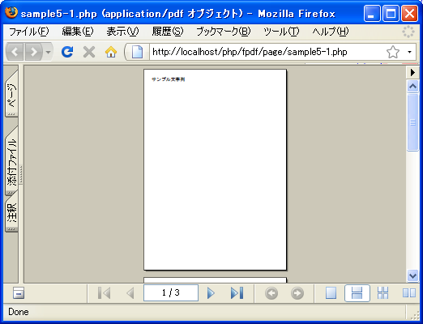
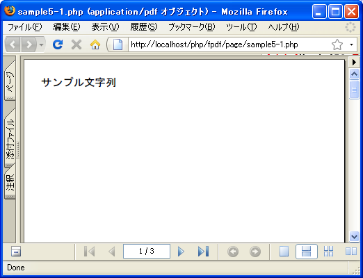
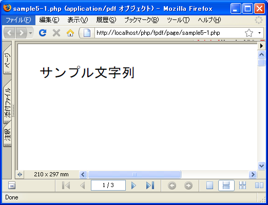
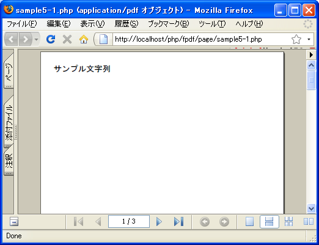
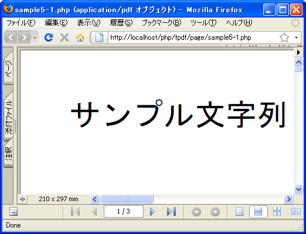
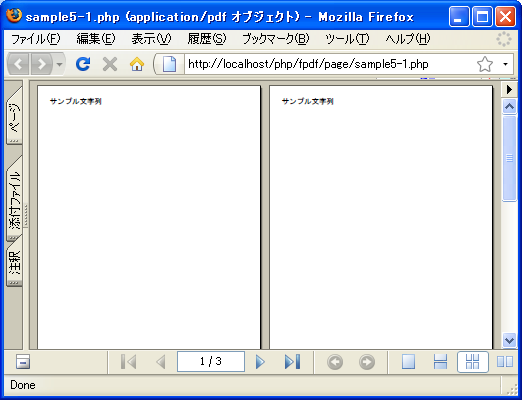

- Home ›
- FPDFを使ったPDF作成 ›
- ページ管理
ビューアでの表示方式の設定(SetDisplayMode)
PDFドキュメントを出力する時に、ビューアでどのように表示されるのかを設定することが可能です。ビューアでの表示方式を設定するにはFPDFクラスで用意されているSetDisplayModeメソッドを使います。
SetDisplayMode(mixed zoom [, string layout])
ドキュメントがビューアにどのように表示されるかを定義します。 パラメータ: zoom 拡縮(ズーム)方法 layout ページのレイアウト
1番目の引数にはPDFドキュメントの拡大方法を指定します。指定できる値は次の通りです。
fullpage: 全画面に拡大して表示 fullwidth: ウインドウの中での最大サイズに拡大して表示 real: 実際のサイズで表示。(倍率を100%) default: ビューアのデフォルト設定によって表示 倍率を数値で指定(例：50%の場合は「50」)
「fullpage」を指定した場合は、ページの全体が表示されます。「fullwidth」を指定した場合はビューアの大きさに合わせてページの横幅が収まるように表示されます。「real」を設定した場合は実寸表示されます。倍率で100%を指定した場合と同じです。「default」を指定した場合はビューアの設定を使います。デフォルトの値は「fullwidth」です。
また倍率を任意の数値で指定することもできます。例えば「50」や「100」などです。
2番目の引数にはPDFドキュメントのページのレイアウトを指定します。指定できる値は次の通りです。
single: 1ページにすべて配置 continuous: ページを連続して配置 two: 2ページ単位（見開き）で配置 default: ビューアのデフォルト設定によって配置
「continuous」を指定した場合はページを順に配置します。「two」を指定した場合は横に2ページずつ表示されるように配置します。「default」を指定した場合はビューアの設定を使います。「single」の意味は分かりませんでした。デフォルトの値は「continuous」です。
実際には次のように記述します。
<?php
require('fpdf/mbfpdf.php');
$pdf = new MBFPDF();
$pdf->AddMBFont(GOTHIC ,'SJIS');
$pdf->AddPage();
$pdf->SetDisplayMode('fullwidth', 'two');
$pdf->SetFont(GOTHIC,'',20);
$pdf->Write(10,'サンプル文字列');
$pdf->Output();
?>
サンプルプログラム
では簡単なサンプルで試してみます。
<?php
require('fpdf/mbfpdf.php');
$pdf=new MBFPDF('P', 'mm', 'A4');
$pdf->AddMBFont(GOTHIC ,'SJIS');
$pdf->AddPage();
$pdf->SetDisplayMode('fullpage');
$pdf->SetFont(GOTHIC,'',20);
$pdf->Write(10,'サンプル文字列');
$pdf->AddPage();
$pdf->Write(10,'サンプル文字列');
$pdf->AddPage();
$pdf->Write(10,'サンプル文字列');
$pdf->Output();
?>
上記のファイルをWWWサーバのドキュメントルート以下に設置しブラウザからアクセスすると次のように表示されます。

今回は拡大率に「拡大方法」を設定した場合です。ページ全体がビューアに表示されるように調整されます。他の値を設定した場合を下記に掲載しておきます。
「$pdf->SetDisplayMode('fullwidth');」

この設定はデフォルトの設定です。ページの横幅がビューアに入るように調整されています。
「$pdf->SetDisplayMode('real');」

この設定は実寸サイズ(拡大率100％)の場合の設定です。
「$pdf->SetDisplayMode(50);」

この設定は倍率を数値で指定しています。拡大率を50％に設定しています。
「$pdf->SetDisplayMode(200);」

この設定の場合も倍率を数値で指定しています。拡大率を200％に設定しています。
「$pdf->SetDisplayMode('fullwidth','two');」

この設定の場合は2ページずつを一度に表示するように設定しています。拡大方法との組み合わせによって表示は異なります。
( Written by Tatsuo Ikura )

著者 / TATSUO IKURA
初心者～中級者の方を対象としたプログラミング方法や開発環境の構築の解説を行うサイトの運営を行っています。